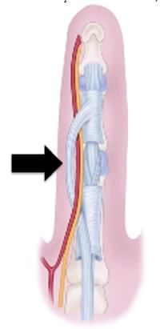

Uma questão de prova que vira cuidado no centro cirúrgico. Olhe a seta antes de olhar as alternativas.

Imagem da questão originalA corda patológica sinalizada na imagem é formada pelo ligamento
Comente a sua letra. Arraste para a resposta.
A seta mostra a corda espiral: ela se enrola em volta do feixe neurovascular. Um dos seus componentes é o Grayson, que fica do lado palmar do feixe.
Ao contrair, a corda espiral puxa o feixe para o centro do dedo e para perto da pele. Na fasciectomia, ache o nervo na palma, onde ele ainda está no lugar, e siga até o dedo.
Questão do TARO 2022 sobre a doença de Dupuytren. Qual ligamento forma a corda da seta?
A corda espiral se enrola no feixe neurovascular e, ao contrair, leva o nervo para o centro do dedo e para perto da pele. Ache o nervo na palma antes de ressecar a corda.